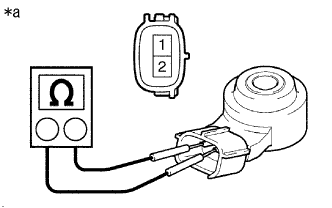

Knock control sensor single inspection |
| 1. Knock control sensor inspection |
Resistance inspection
|  |
Use SST (Toyota Electrical Tester) to measure resistance between terminals.
| Inspection terminal | Inspection condition | Reference value |
|---|---|---|
| 1-2 | Always | 120 to 280 kΩ |
| *a | Connector non -connection status (Knock control sensor) |